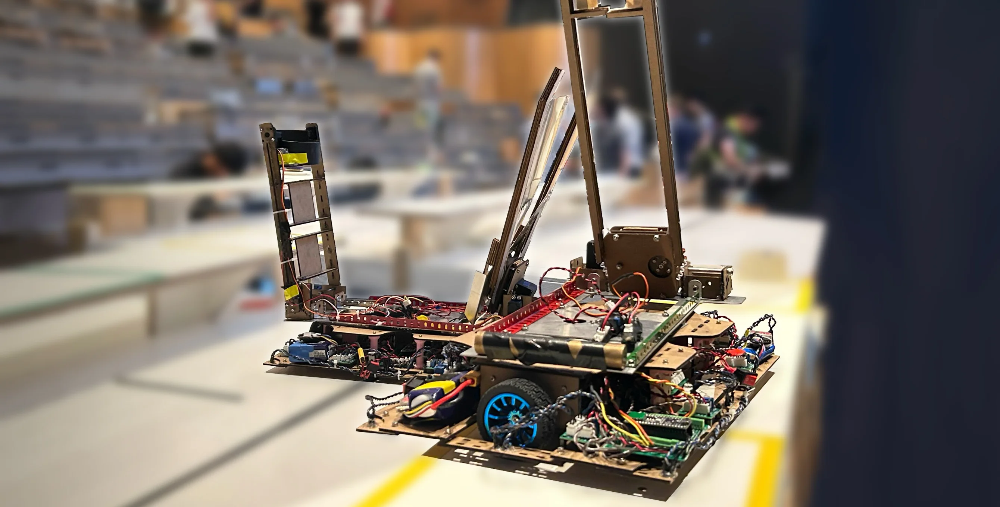
ENPH253 - Overcooked Robot
About the Project
The summer of second year at UBC's Engineering Physics program is fondly called robot summer, as every student must compete in an intense, robot competition.
This year the competition was based on the game overcooked. The task was to design and build two robots that would work together to assemble fake dishes in a timed setting, similar to the game overcooked.
Here are some skills I learned/used in this project:
- Mechanical Skills: CAD (Onshape), DFM, laser cutting, and 3D printing
- Software Skills: C++, HTTPS communication, Tkinter GUIs, and state machines.
- Electrical Skills: System Design, H-Bridges, debouncing (schmitt triggers), and power distribution (buck converters vs LDOs).
Team Members: Ella Yan, Brianna Gopaul, Tristan Brown, Nathan Tourveille
We placed 4th overall which we were somewhat satisfied with. Check out our robot in action below!
Burger Assembly From Start to Finish
First Team to Make a Burger :D
Competition Rules
This year's competition was based on the game Overcooked, a game in which, multiple players have to work together to prepare and serve dishes in a timely manner.
Competition Overview
- Objective: Build two robots to autonomously prepare and serve as many dishes (e.g., plastic salads, burgers, fries) within 2 minutes.
- Key Tasks: Robots must pick up, "chop", "cook", assemble, and serve dishes to earn points
- Timeline: Students are given approximately 6 weeks to bring up their robots from scratch
Competition Surface
- 8'x8' wooden surface with countertops 6" above the surface
- Black electrical tape marks a straight path and locations of ingredients/cooktops
Ingredients and Plates
- Coloured tape marks where ingredients/plates can be initially placed
- Students are to place the ingredients in their specified locations and the robots must autonomously pick them up
Recipes
- Many possible recipes ranging from cheese plate (cheese on a plate worth 1 point) to deluxe burger + fries + salad (worth 21 points)
- More complex recipes are generally worth more points
- Burger patties/fries must be cooked, meaning they must sit on the cooktop for 5-20s
- Fries are connected via velcro and must be chopped (separated) before serving
Serving and Tips
- The serving area has no black tape indicator but rather has an IR beacon instead
- Dishes like burgers can lose points if the presentation is sloppy (i.e. the pattie is about to fall out of the burger)
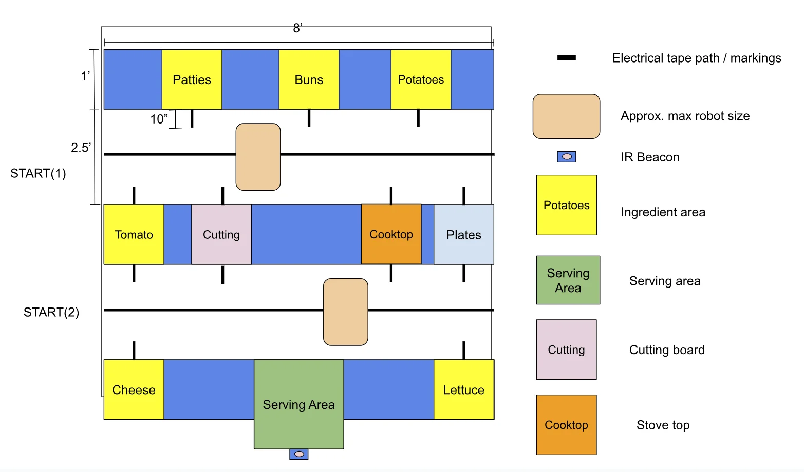
Competition Surface Diagram
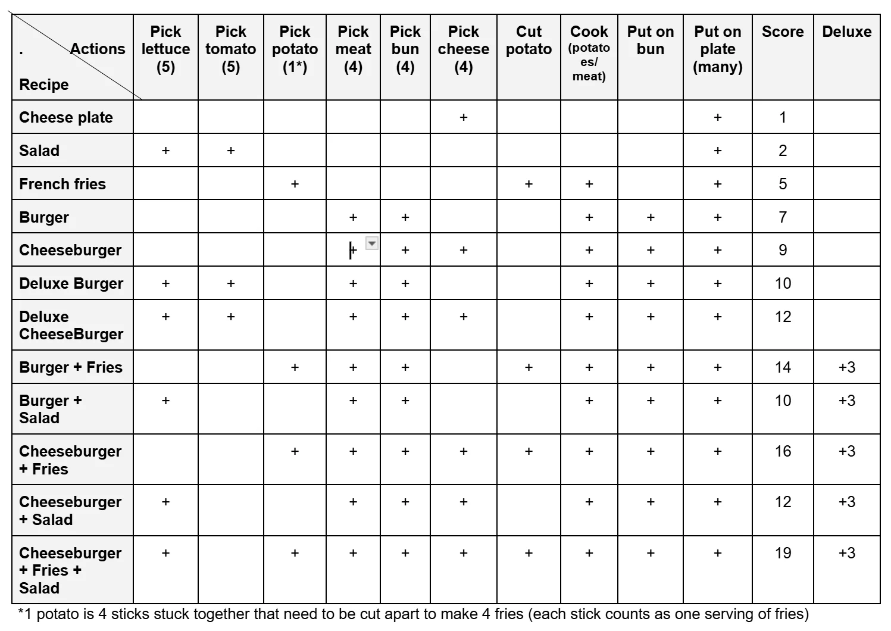
List of Recipes (Deluxe Includes Tomato and Lettuce)
Mechanical Design
Preliminary Design
- We wanted something that was fool-proof/100% doable in 6 weeks by us, a team of students with next to no mechanical CAD experience :D
- We wanted both robots to have a very similar design to reduce the amount of work we had to do/increase our chances of finishing on time
- We decided to go for a claw and chute design... (in hindsight this was very wacky but we were running out of time and just had to pick an idea and send it)
- We decided to have our robot be extremely wide and only drive left/right, while making slight adjustments to stay on track
- The reasoning for the claw was that the large sweeping motion would be robust against positioning errors
- The reasoning for the chute was so we could produce a perfectly stacked burger each time
- We did consider designs that could make multiple burgers at once, but decided they were not feasible in 6 weeks (which in hindsight was the right play)
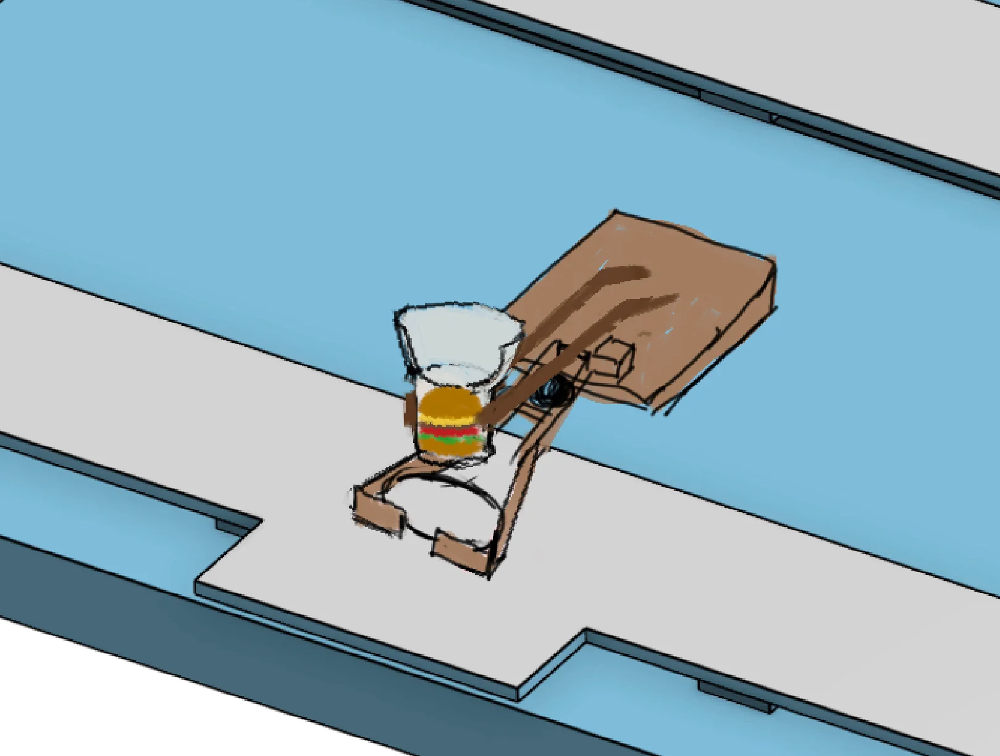
Preliminary Sketch of Burger Being Served
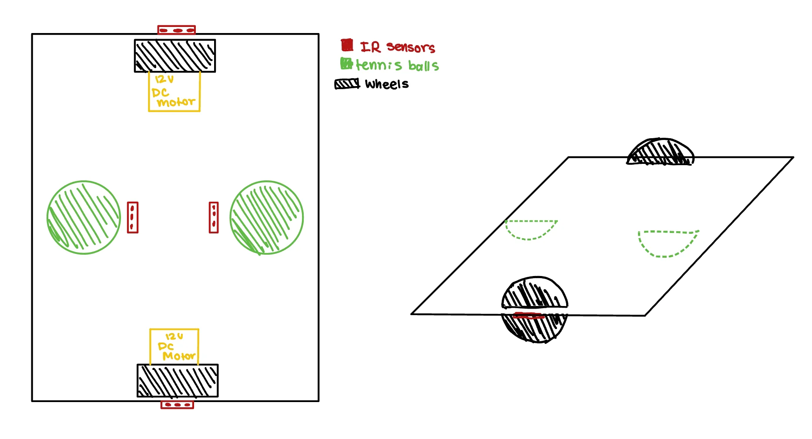
Initial Chassis Layout With Tennis Balls for Suspension
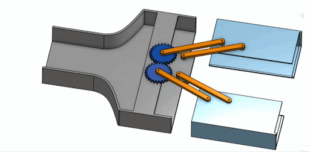
Initial Claw Proof of Concept
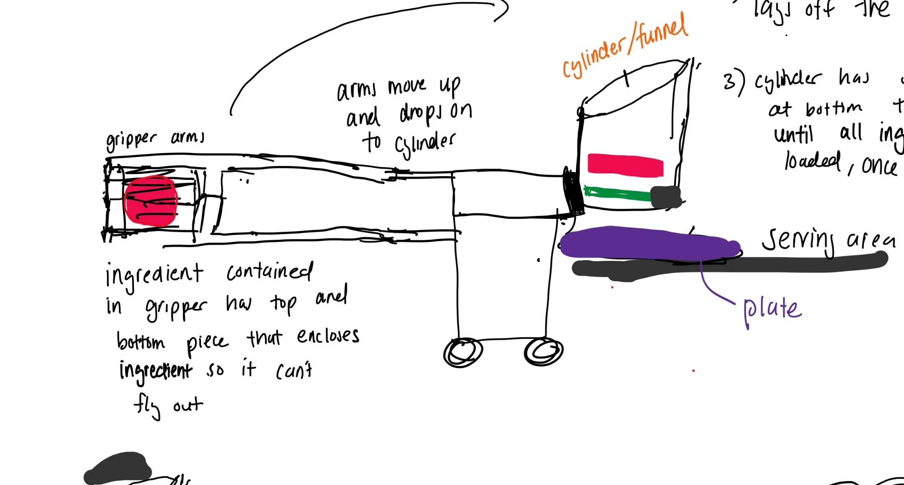
Initial Sketches of Claw and Chute Idea
Detailed Design and Manufacturing
One of my tasks during this project was to CAD the chassis. The claw and chute were designed by Tristan and Nathan.
We decided to use two wheels, and two tennis balls for support. The tennis balls, though difficult to cut, worked surprisingly well! Their flexibility allows them to act as a suspension while the fuzziness lets them glide smoothly across the floor.
We designed the top half of our robot, holding the claw and chute, to rotate 180°. The reasoning was that we thought that operating a single servo would be easier than making our whole robot rotate (which runs the risk of becoming disoriented). In hindsight this feels a bit inelegant but hey, it still worked.
I CADded everything using OnShape and made an assembly to allow us to visualize where to mount servos and PCBs.
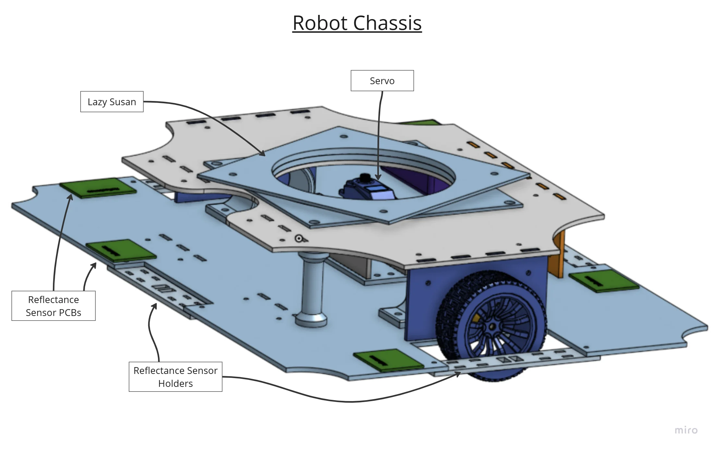
Assembly of the Robot Chassis, Reusable for Both Robots!
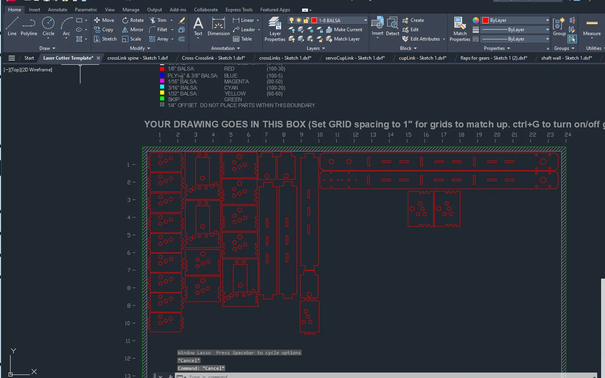
Nesting Claw Components for Laser Cutting
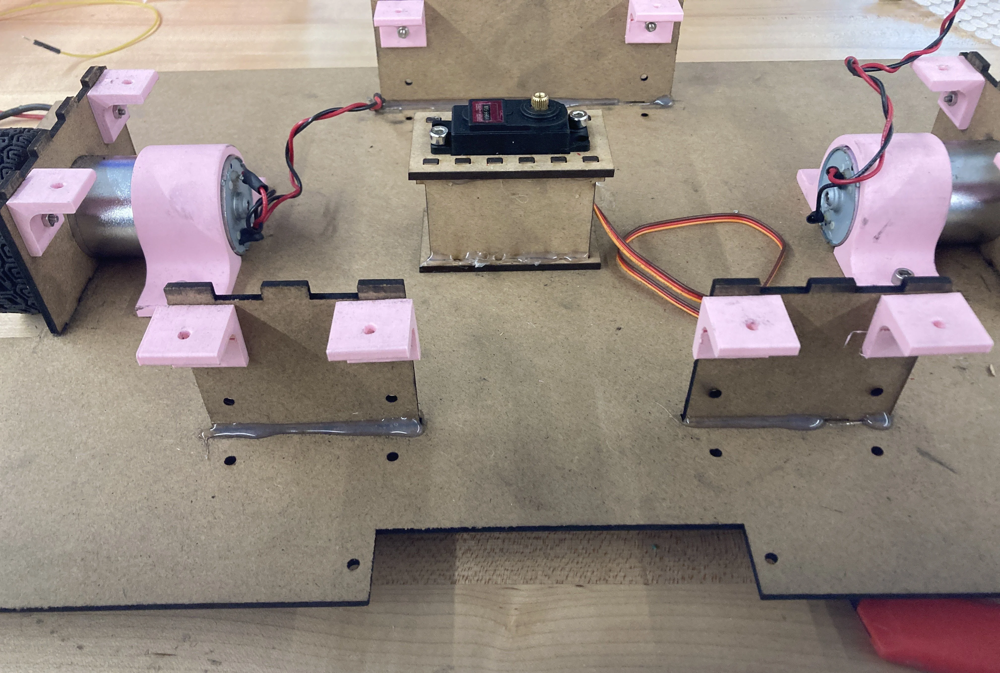
Partially Assembled Drivetrain
Testing Burger Serving Mechanism
Electrical Design
Microcontroller Selection
We chose to use ESP32s over bluepills as ESP32s come with built in wireless communication capabilities, namely WiFi, Bluetooth, and ESP-NOW. I also just happened to have a bunch lying around :3
One thing to note is that on a lot of ESP32 dev boards, some analog pins share hardware with the WiFi/wireless communication which renders them unusable when ESP-NOW/WiFi is in use! We learned this the hard way D:
What is ESP-NOW?
- An efficient peer-to-peer communication protocol developed by Espressif specifically for ESP32 devices
- Does not require connection to an external central network
- Has low latency and low power consumption
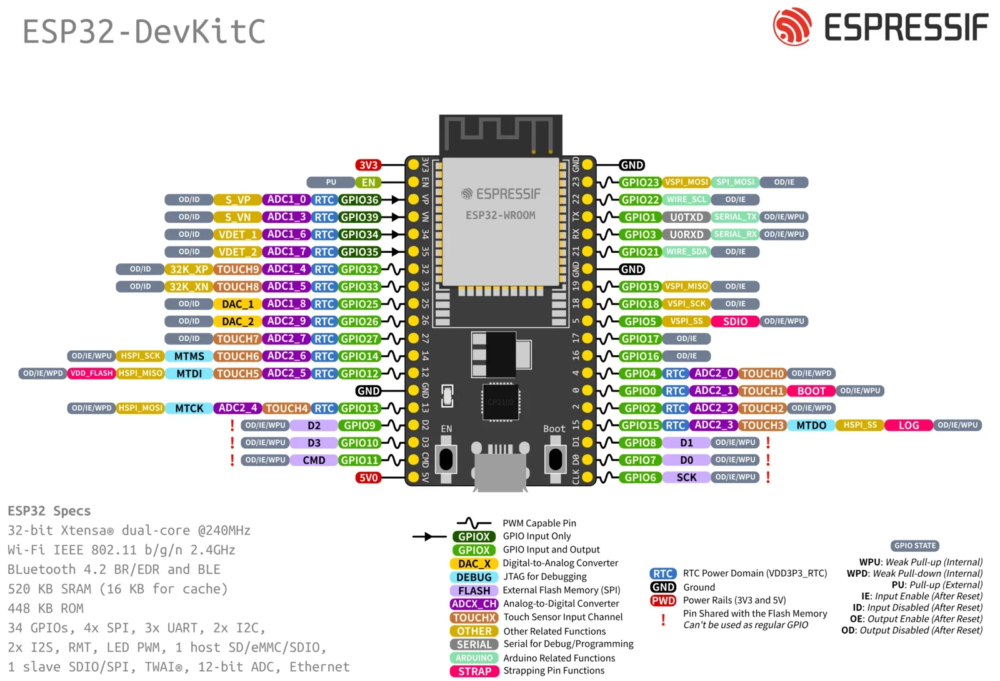
Initial System Design
This was our initial draft electrical block diagram generated during our planning phase. We ended up not using rotary encoders or IR beacon sensors (though Brianna's prototype was still really cool!). We also chose not to include the limit switches and IR beam breaks in the interest of time. We also changed our power system as this configuration causes too much power to be wasted by the LDO leading to brownout scenarios.
We chose give our motors a separate ground as we didn't want the electrical noise to couple to our sensitive sensors and microcontroller.
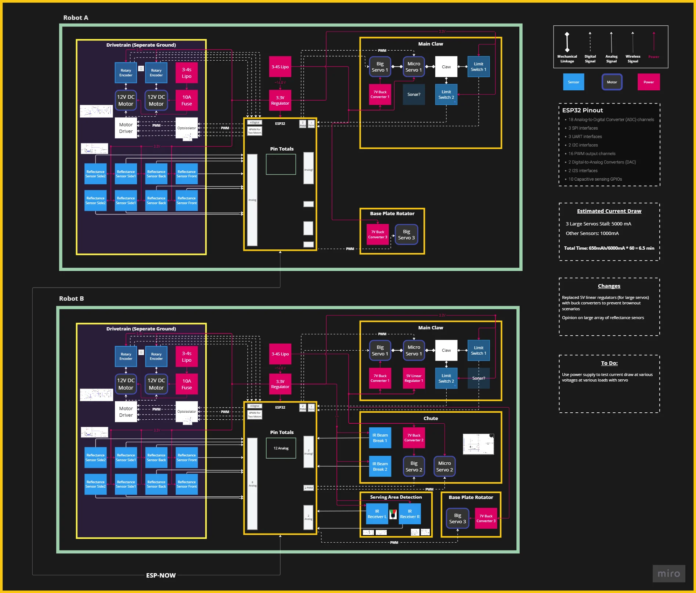
Initial Rough Electrical System Design
H-Bridge Motor Drivers
We made our own H-Bridge circuits to control our motors using LTC1161 motor driver ICs.
On the right is an example schematic showing how to control a motor using the LTC1161. Our motor driver circuits used MCT6 optocouplers to optoisolate the motors from the rest of our circuit to contain noise.
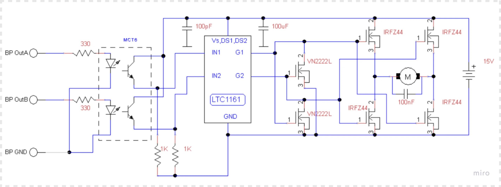
H-Bridge Example Circuit
How does an H-Bridge Work?
- Consists of 4 switches, usually MOSFETs, arranged in an "H"
- By toggling which two switches are on, you can control the direction of current across the motor
- Be careful though, if you turn on switches in the wrong configuration, you could have a short!
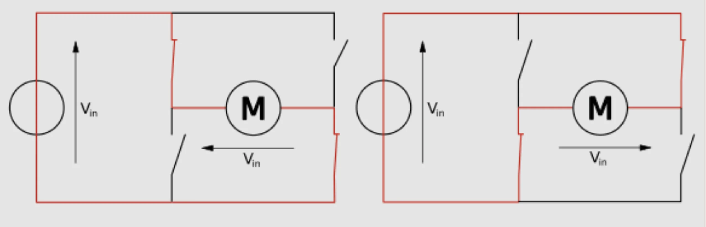
H-Bridge Switching Back and Forth
Completed PCB
We chose to make PCBs to avoid having to solder multiple H-bridges by hand (and also for the learning experience).
The PCB features a circuit similar to the one shown above, but makes use of the fact that the LTC1161 can support two motors at once. It also featured testpoints and a power LED that came in real handy during debugging!
We chose to not use SMD components on our PCB, using only components available in our lab instead as we receive those components for free. This also made it a lot easier and cheaper to swap out faulty parts (cough cough MOSFETs).
My teammate Brianna made the PCBs while I reviewed them and gave her guidance/advice.
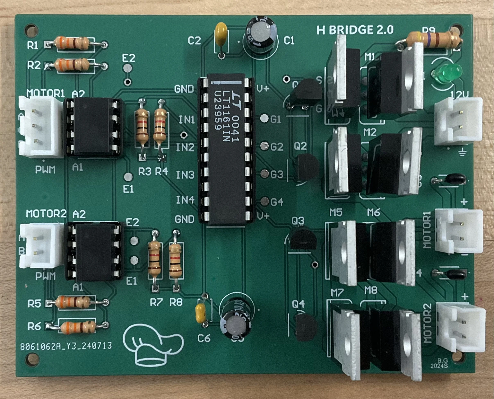
H-Bridge PCB Made by Brianna
Reflectance Sensors
We used TCRT5000s to detect the black tape on the white competition surface.
How do Reflectance Sensors (TCRT5000) work?
- These sensors consist of an IR LED and a phototransistor
- Effectively work by emitting IR light and then measure the amount of light that bounces back
- Pointing the sensor in the air means the light will never bounce back to the phototransistor
- Pointing the sensor on something black means the light will be absorbed and will not bounce back to the phototransistor
In our application, we pointed the TCRT directly down on the competition surface to detect the tape. When the TCRT shone on the black tape, the light would be absorbed and we would read a very high value. When the TCRT shone on the white competition surface, we would read a very low value.
Why Analog Readings?
- Different environments could affect our TCRT readings so we wanted to be able to tune the tape threshold value easily in software
- We also do have potentiometers to tune each individual reflectance sensor
- The TCRT reading is very high in the center of the tape, and then slowly tapers off which means we can tell how centered we are on the line with a single TCRT
- Warning! On ESP32s ADC2 shares hardware with WiFi/ESP-NOW and so you cannot use some analog pins while WiFi/ESP-NOW is in use
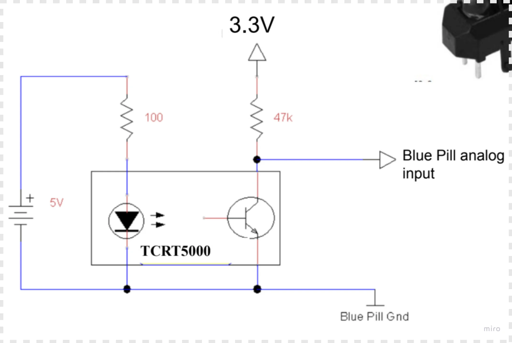
TCRT5000 Circuit
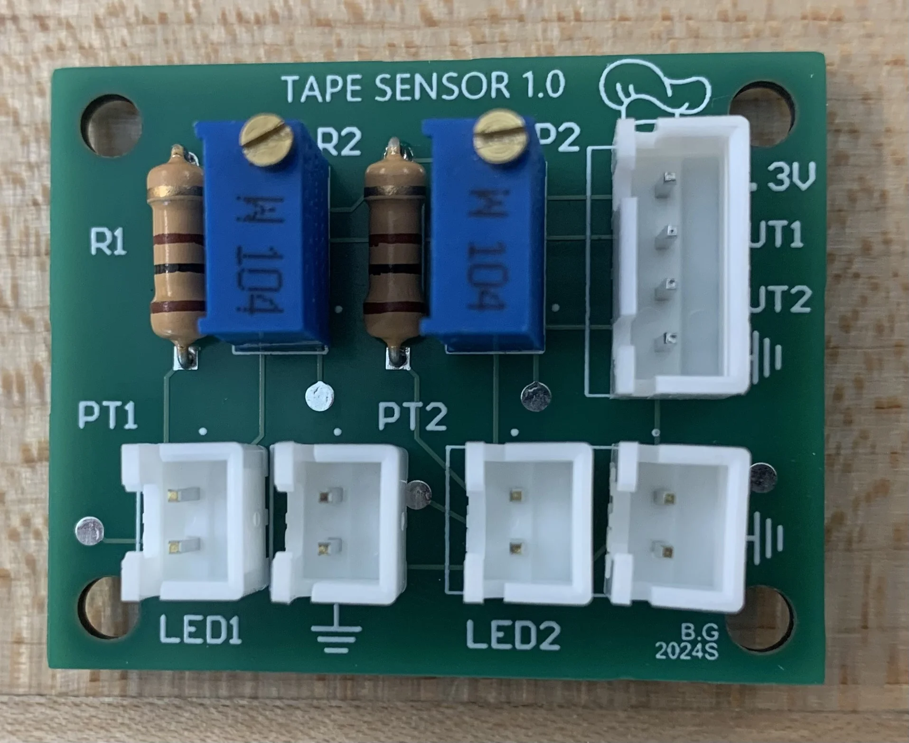
Reflectance Sensor PCB
Power Distribution
We used a combination of LM2596 buck converters alongside LM7805/LM7833 LDOs and 2s/4s LiPos to power our final system. Our motors were running off a 4s LiPo connected to a buck which stepped the voltage down to 12V. We also used a buck to step down a separate 2s LiPo to ~5.5V for our servos. We then used LDOs to step the voltage further down to 5V and 3V3 for the rest of our circuitry.
Mistakes Were Made
We were initially so focused on other aspects of our robot that we made some very silly mistakes prototyping our power system. I don't know why we thought this was a good idea but we were stepping down ~16V to 5V and 3V3 only using LDOs. We didn't realize that the LDOs dropped voltage by wasting the excess power as heat. Our LDOs became insanely hot and shut down quickly. Here is a scope reading of our power board that haunts my dreams. If you're reading this please learn from our mistakes.
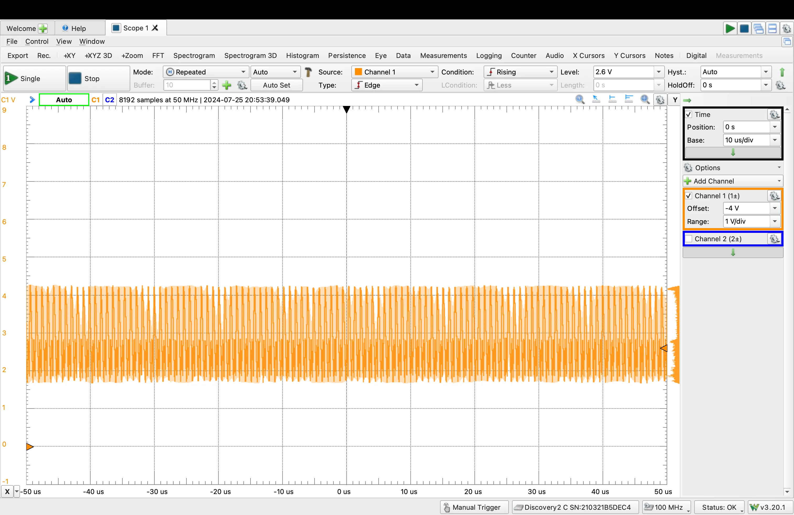
3V3 Line From My Nightmares
Software Design
State Machine
We originally used a state machine to organize our code. The list/order of tasks the robot needed to complete were very straightforward to implement with a state machine.
On the right I have the general block diagram that the two robots followed.
We wanted to organize sensors and other items into classes. For example, we made a separate class for the motor with speed/frequency setting functions to keep our code organized.
Our code did end up becoming really messy at the end as we just cared about getting something working, rather than coding something maintainable, but the code was pretty well organized at the beginning which made rushing at the end easier.
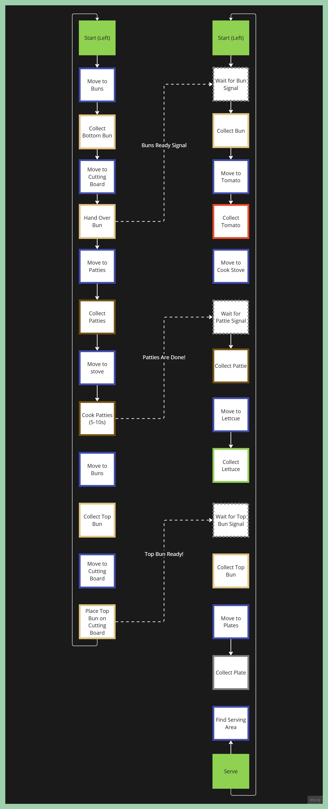
State Machine Block Diagram
Testing GUI
We used PlatformIO to flash code to the ESP32 over USB connection. Uploading code to the ESP32 was considerably slower than uploading code to the bluepill. This becomes a problem when you want to constantly adjust and tune parameters as you would have to wait 30s to reupload code each time you adjusted a parameter or wanted to add a print statement.
To circumvent this, I made a testing GUI using Tkinter to allow us to communicate with the ESP32 over WiFi. The ESP32 would connect to the school WiFi or a hotspot and then I could send HTTP post/get commands using the GUI on my computer.
This was extremely useful for tuning the driving control loop as we could simply send a new P error multiplier over the WiFi and have it take effect instantaneously. We could also very easily write commands to the robot while it was in motion, allowing us to more easily characterize our robots behaviors.
Sorry it's lowkey ugly but it worked!
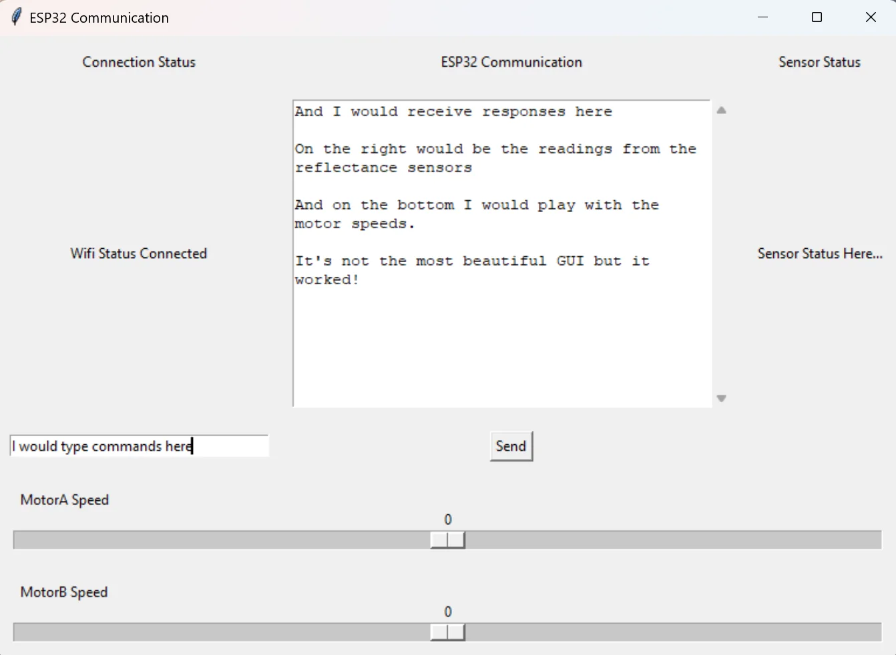
Testing GUI
Line Following
We played around with PID line following but we found that setting I and D to 0 sufficed for our competition. I believe we mainly used P to stay on the line.
We also tracked where the last known location of the line was. If we went off the line, we would check if we went off to the right or left side of the line. Our algorithm was lowkey, "if on the line, don't be".
Anyway here's some really cool videos of the robot line following!
Resistance to Perturbations
POV Line Following